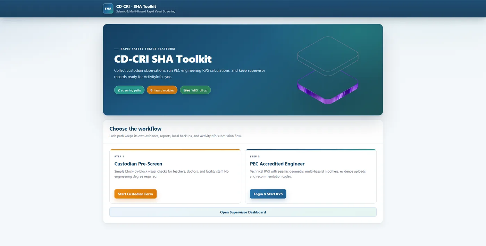
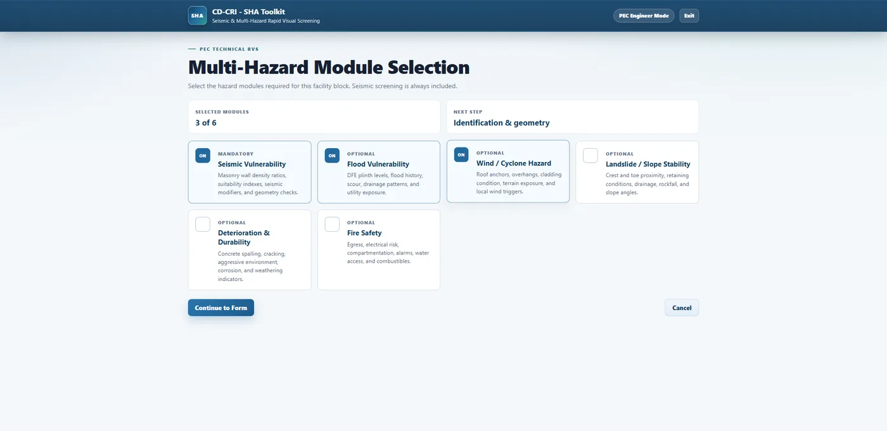
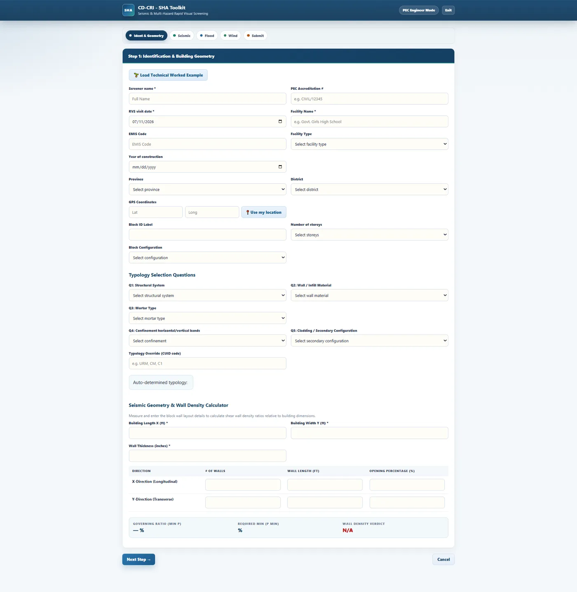

Featured · Live in production
CD-CRI SHA Toolkit
A seismic & multi-hazard Rapid Visual Screening platform for PEC-accredited engineers and facility custodians — architected, built, and deployed end-to-end.
- Dual screening workflows — simple custodian pre-screen plus full technical RVS with seismic geometry and modifiers.
- 6 hazard modules with evidence uploads and recommendation codes.
- Supervisor dashboard with live WBO roll-up and ActivityInfo sync.
ReactNode.jsPostgreSQLActivityInfoVercel